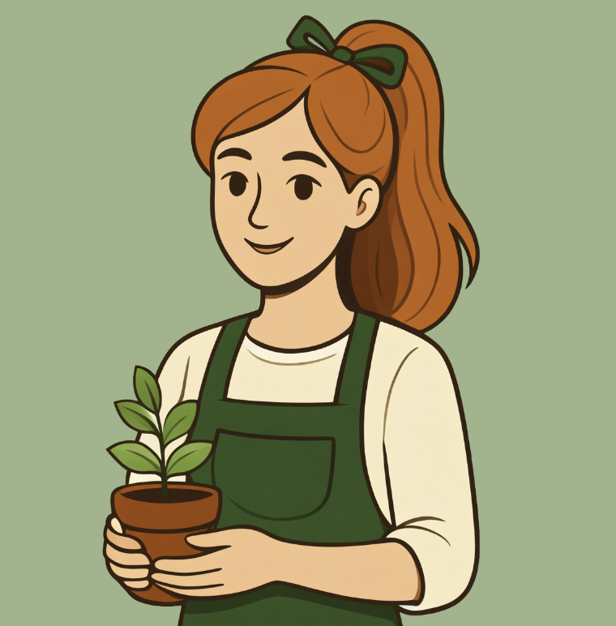

🌿
🍃
Ask Flora

Hi, I'm Flora!
Your gardening friend. I'll get to know your garden and help you grow things you'll love.
By chatting, you agree to Flora's privacy policy.

Your gardening friend. I'll get to know your garden and help you grow things you'll love.
By chatting, you agree to Flora's privacy policy.